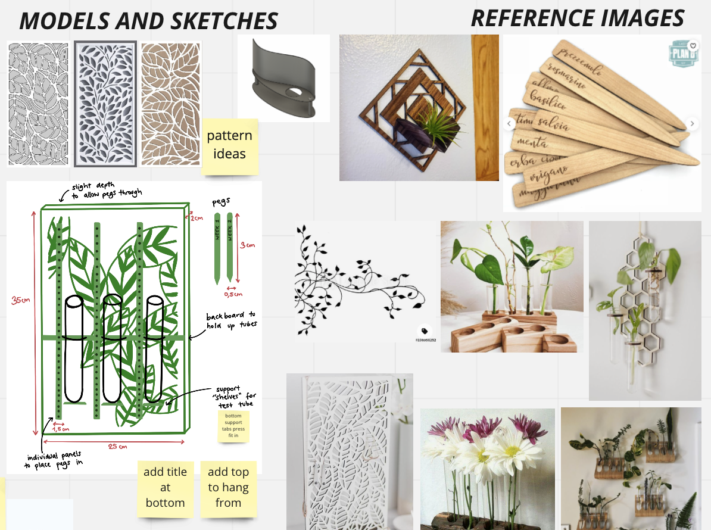
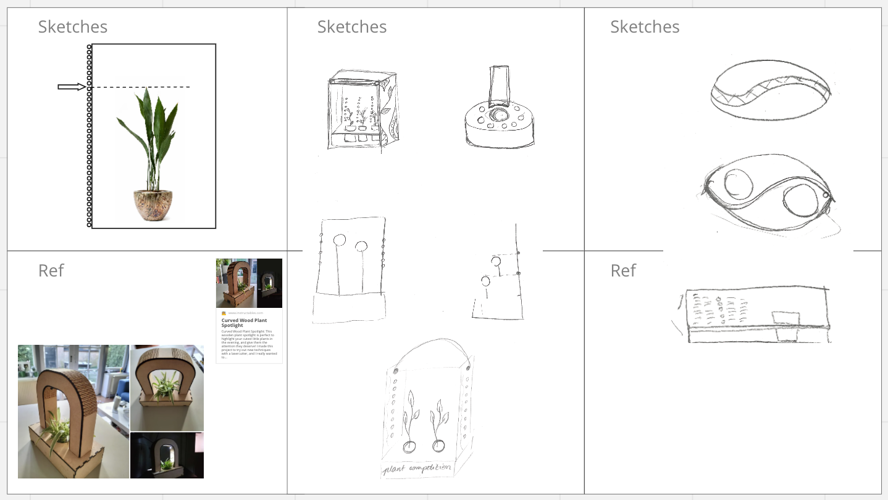
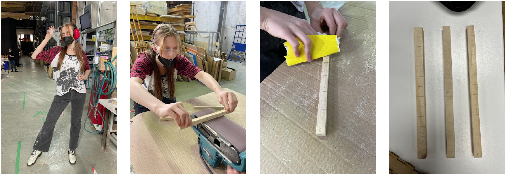
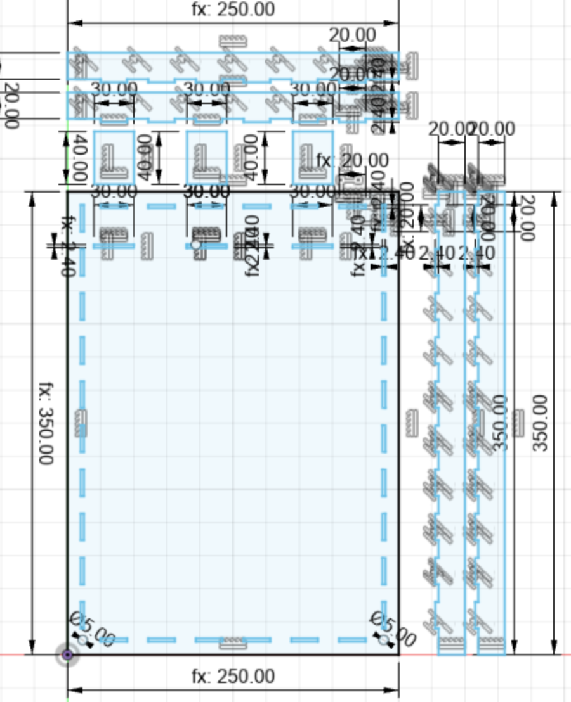
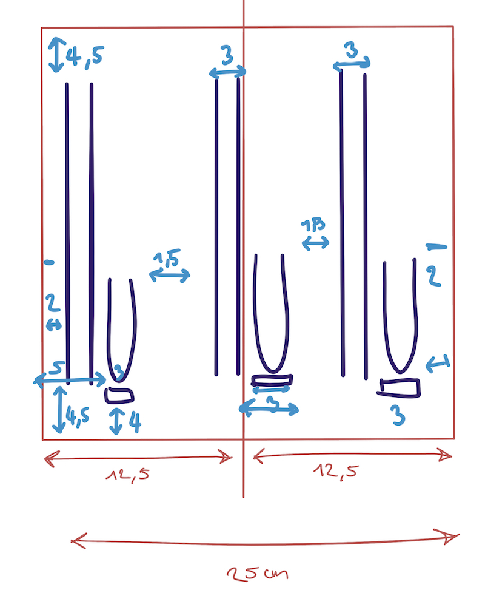
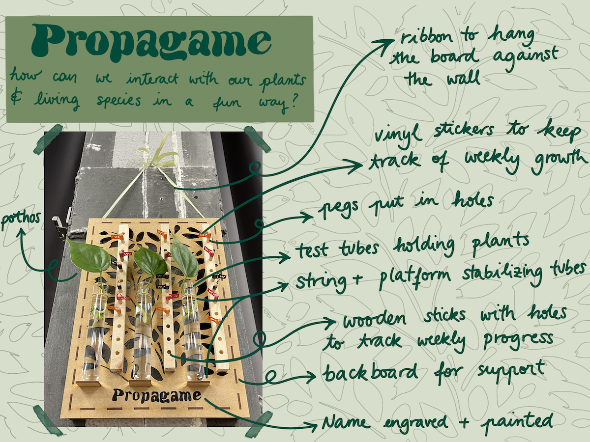

fabacademy challenges
Monthly Micro Challenges
Our first Fabacademy challenge! I teamed up with Marina and Roberto to work on this challenge. This was the task for this challenge:
Design and make "something" that can help the process of designing / creating / thinking / collaborating with others.
The full documentation of the project can be found on our repository. On this page, I will summarize the process, focusing on my perspective.
The overall goal of our project was to combine all the skills we have learned during Fabricademy so far by making an interactive game involving plants. It would involve multiple people, who could measure the growth and progress of their plants over time, allowing the best caregiver to win.


How does it work?
You place 3 propagating plants side by side, with 3 thin wooden stick with holes in them in between them. The holes in the stick would be accompanied by wooden pegs which represent the speed at which the plants are growing.
This is how we got the name, Propagame, a mix between "Propagation" and "Game" but also a play on the Spanish word "Propágame" which means "Propagate me".
Each week, the players would measure the growth of the plants and add the corresponding "Week x" peg to the height the plant has grown. The winner of the game is the caregiver whose plant has grown the most by the end of the stipulated time frame.


In the first few days, I worked on the Miro board and the sketches. Then, with Marina, I started doing the woodwork on the measuring sticks. We found some scrap wood which we could use and began measuring the desired length, according to the tube length. One thing to note is that the scrap wood we found each had slightly different compositions and sizes, which is important to consider in the next few steps.
We settled upon making each piece 26cm, made the marks for the cuts and began cutting. We used the saw, then sanded the edges in order to get them all the exact same width and depth. It was hard to achieve this, but we managed.

Once every wooden piece was the same size and circumference, we proceeded to mark where we wanted our holes for the pegs to be. The pegs we chose were actually 0.6mm x 30mm dowels, so we based our measurements upon this. We chose to space the holes in 2cm gaps, but looking back we could have definitely gone smaller, perhaps 1,5cm.
We chose a 0.6mm drill attachment and began drilling according to the marks. After a few holes, we found a technique which worked well for us: I positioned the stick lengthwise while Marina centered it widthwise, making it align as perfectly as possible. We got our holes done and were super happy!
In the meanwhile, Roberto worked on the laser cut file in Illustrator. However, we encountered some difficulties. When opening the file in Rhino, there was a lack of precision in the joints, meaning some lines would overlap while others were not fully connected.
Roberto tried fixing the file twice in Illustrator but both times the same mistake occured. I decided to start from scratch in Fusion to avoid the issue altogether. So I quickly made a sketch calculating the precise measurements we needed, then I put my recently learned skills to the test and designed it parametrically, just in case we needed to make further modifications.


You can find the final file here.
The file finally worked in Rhino so we decided to cut with the following settings:
- Laser cutter for cutting 3mm MDF: 55 power, 0.5 speed
- Laser cutter for engraving 3mm MDF: 70 power, 100 speed
Once we finished cutting the board on the laser cutter, we proceeded to assemble the different parts. The final result fit very well. In the meantime, Marina worked on the vinyl cutting (which you can read in depth on the repository).
To finalise the project, I created a diagram highlight the various components of our output:

Overall, I had a fun time working on this project. There was a lot I learned but a lot I would do differently too. You can read all of the details in the conclusion on our website, here.